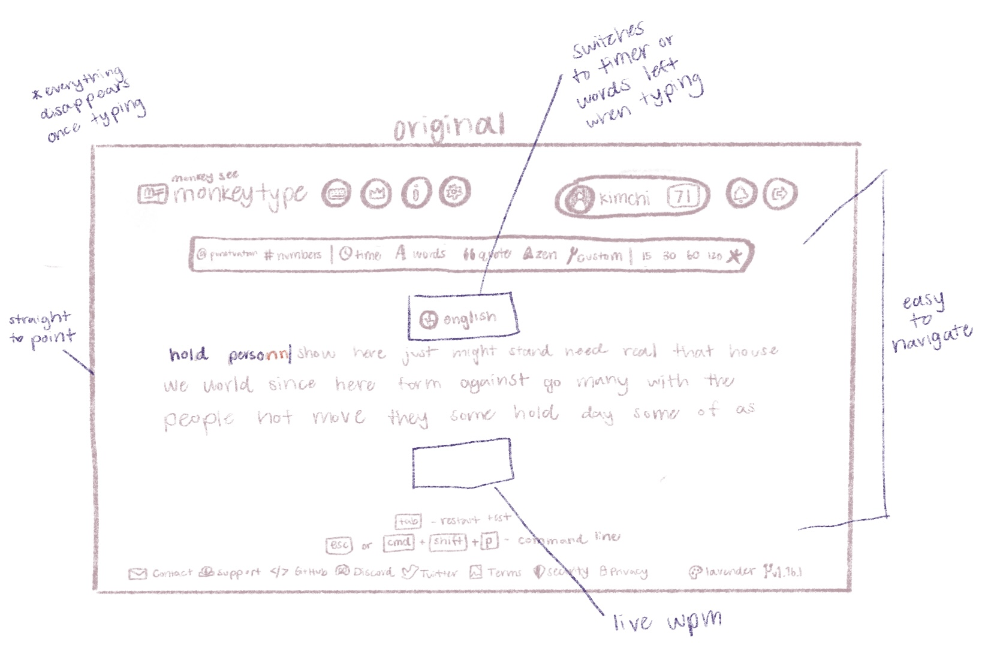
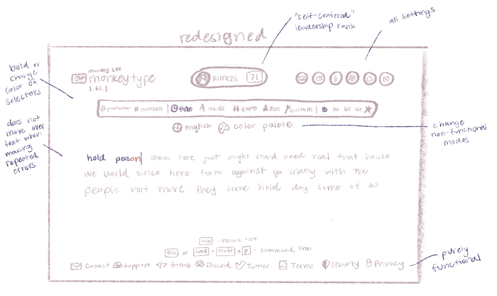

-
Using the favorite website you chose in homework 1, create a wireframe for one page of it using pen/paper, PowerPoint, or any your tool of choice. (use the 'img' tag!) Make sure to let us know what the name of your website is (Use the 'p' tag!)

Monkeytype.com
-
Try to improve the website you've chosen, and create a redesigned wireframe of one page for the same website using the principles of visual hierarchy that you learned from the article.

-
What is the goal of the website? Who is it intended for? How does the design accomplish this? Write 2-3 sentences answering these questions. (Use the 'p' tag again!)
The website's function is for use of speed typing or typing pratice or on a keybaord by calculating average words per minute and accuracy with different tests. Upon opening the website, users see a random set of words and are ready to start a test with the click of a key rather than pressing a button to start. The words will display as darker as the are typed with the graph and numerical results showing after a test to encourage users to track results and do better competitively. There is also an option to include the live wpm and timer or words typed (depending on the kind of test) on the screen while users are typing.
-
Write 2-3 sentences about what problems your redesign addressed, and how it solved them.
The website is already amazingly designed to keep things simple and easy to navigate but I included a couple changes in the redesign make things slightly easier to use. I moved the account information and leadership rank to the center top of the page to better center the top row and it creates a "self-centered" or self-improving purpose as users see themselves and their ranking at the center of attention with the rest of the circle-shaped main pages that were on left now identically united on the right. The color palette button on the bottom was moved next to the language button below the control setting row as they both serve functions that can be changed to the user's preference but do not change the actual mode of the test. The test mode selectors before did not display which modes were on before testing, so having them bolded or changed in color would help differentiate those modes. Finally, when testing and making an error that proceeds the word on the screen, the incorrect characters will appear after the word, pushing the text and changing its layout, which can mess with the efficiency or confuse the user while typing solely for speed purposes rather than accuracy. The redesign will keep the text cursor in place of where the mistake was made at the end of the word, not visually tracking the number errors while still counting those errors in the word until the next word is typed.
NOTE: Make sure to include the wireframe images in the website and don't just put it in your assets folder!
Your wireframes should look something like this: